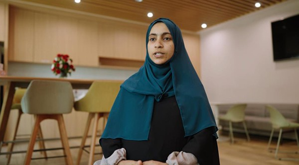

知识在这里改变命运，不仅是个人命运，也包括国家命运。
——华为在坦桑尼亚的数字人才培养实践
从华为坦桑尼亚ICT大赛的第一批获奖女选手，到亲手建设坦桑尼亚国家骨干网二期工程的技术工程师……这代坦桑尼亚年轻人，正在用他们所学的ICT知识，改变自己的命运，同时，也在亲手交付、塑造自己祖国的数字化未来。
知识改变个人命运，也形塑着社会的未来。在坦桑尼亚，ICT知识正在释放巨大能量。
二十四岁的祖雯娜（Zuwena Hamudu Salum）是个腼腆的女孩，但在ICT行业，她当仁不让，闯出了一条路。她毕业于达累斯撒拉姆大学计算机工程与信息科技专业。2021年，大四的她第一次参加华为ICT大赛，成绩不佳。在颁奖活动上，她听到主持人说， “什么时候能有一位女士站在这里？” 她在台下，被这句话击中，对自己说，她要做那个站在领奖台上的女孩。她和同伴在第二年的ICT大赛中脱颖而出，成为2018年坦桑尼亚参与华为ICT大赛以来，首批获奖的女选手。
在坦桑尼亚，女性工程师面临着不少挑战，但她们也展现出了非凡的韧性和才华。性别刻板印象和固定标签常常给女性追求工程职业梦想的道路带来阻碍。想Zuweina一样的优秀女性工程师们通过挑战性别偏见、坚持自己的信念、勇敢探索未知，同时培养毅力和行动力，打破了性别桎梏，活出了自我价值 。
如今，她经过层层选拔，入职华为，成为华为坦桑尼亚的数据工程师。祖雯娜把华为ICT大赛看作一次美好的旅程。大学时，她就有对ICT技术的强烈热情，但只有学校基础课程，她难以胜任现在的工作。华为ICT大赛中学习的知识，帮她开启了职业生涯。在职场上，华为给Zuweina提供提供了友好、支持和平等就业的机会，也同时让女性雇员承重，让她们能够更好的发挥自己的智慧和能力 。
Zuweina则有幸作为团队成员一员投入坦桑尼亚国家ICT骨干网项目中。国家ICT骨干网连接了坦桑尼亚所有地区总部和少数镇中心，正在升级，并向农村地区扩展。这是坦桑尼亚互联网普及的重要基础设施，有望显著缩小数字鸿沟。尤其是在农村地区，人们的生活实实在在被改变。截至目前，骨干网建立了连接坦桑尼亚26个地区的光纤宽带网络，将超过 200 万农村地区人口与运营商联系起来。
在坦桑尼亚，像祖雯娜这样的年轻人还有很多，通过华为ICT学院、华为的数字人才培养“未来种子”计划、“华为ICT大赛”等项目，他们获得与世界接轨的技术视野，成为当地ICT行业的新生力量。截至目前，坦桑尼亚已建立起19所华为ICT学院，累计2500名学生在华为ICT大赛中接受锤炼，240名坦桑尼亚学生从华为未来种子项目中受益。
正如华为坦桑尼亚代表张龙称：“坦桑尼亚华为在ICT人才培养上的努力，用一句中国古话来形容就是“授人以鱼不如授人以渔”（授人以鱼不如授人以渔）。我们希望，我们也与坦桑尼亚朋友分享了这种智慧和精神。我希望，我们将继续为这个伟大国家的发展和繁荣作出贡献。”